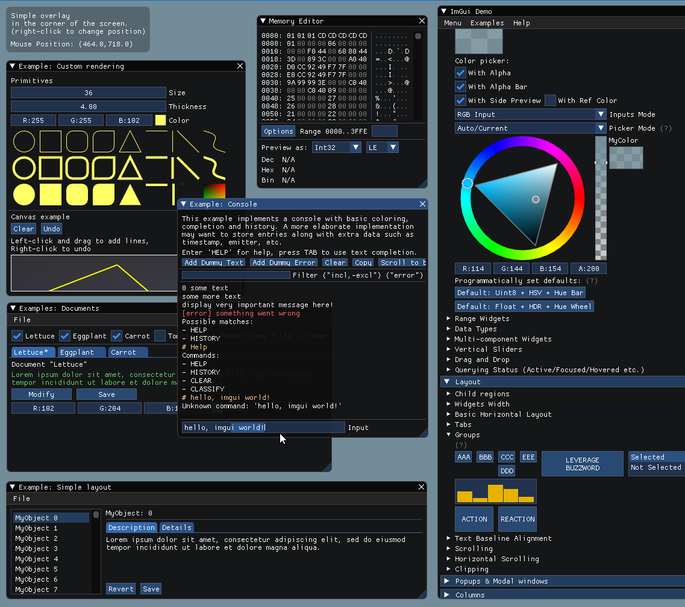
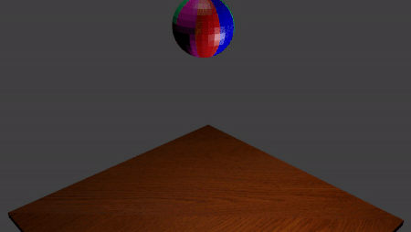
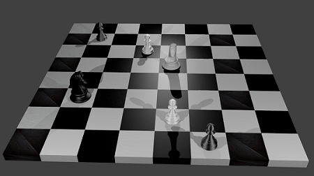

Hey there, I'm Nisha! I love video games and talking robots, and have sought them out professionally in industry and research settings. I just finished up my B.S. in Comparative Media Studies and Computer Science at MIT, and am currently working as a backend engineer on the Twitch video system.
Interned at gaming giants PlayStation and Twitch, with full time conversion to backend engineer at the latter. 3+ years of rigorous coding experience in Python, Java, C++, and HTML/CSS.
Designing
3+ years of designing for various playful experiences; created my own games in Unity, prototyped UI tools for game developers, and written interactive curricula for K-12 students.
Writing
Publications in academic conferences, workshops, and journals. More informally, maintained blogs where I blasted all my thoughts to the Internet since 2011, both personally and professionally.
Work
Selected projects from internships, research positions, and other forms of employment.
Twitch
Software engineering, Golang, AWS
Escape!Bot
Human-robot interaction, Game design, Unity
Dancing with AI
AI education, Curriculum design, Teaching
EDC
Curriculum design, activity design, R
GenAI
Web design, UI/UX design
AI Education Websites
Web design, UI design, HTML/CSS
PlayStation
Software engineering, Game tools, UI design
TaleBlazer
Game tools, UX design, Prototyping
MIT Admissions Blogs
Blogging, Writing
Projects
Projects that originated from a smattering of classes, hackathons, and the deep recesses of my brain.
Interval
Music technology, UI/UX design, Python
AirGuitar
Unity, UI/UX design, XR
Pixel Hero
Game design
Final Fantasy Network
Graph visualization, Python, Gephi
MITCentral
UI/UX design, HTML/CSS
Miscellaneous
Occasionally, I dabble in things that aren't strictly technical.
Art
Blender, Animation
Music
Singing, Guitar, Composition
Writing
Media studies, Blogging, Ethnography
The Story So Far...
The plot is ever changing, so keep checking back in for updates!
2012
Played Final Fantasy 7 for the first time
Fell in love with a world that wasn’t my own, and embarked on a lifelong journey to learn everything I could about video games.
2013-2017
Learned Japanese
Achieved professional fluency in Japanese, mostly to play Final Fantasy 7 as it was originally written. Studied abroad a few times and literally overdosed on green tea.
2017-2021
B.S. in Comparative Media Studies and Computer Science from MIT
Carved out a video game shaped niche for myself professionally. Lived in a bunker where I used my first power tools, stayed up too late every night, and made lifelong friends.
Summer 2018
Undergraduate Researcher at The Education Arcade
Worked on my first ever mobile game. Created more paper prototypes than I can count, and shipped my first features. Played way too much Pokemon Go.
2019-2021
Researcher at the MIT Media Lab
Got decent at Unity, web dev, and being a real researcher. Got to research and design playful interactive experiences with the most empowering and inspirational group of people.
Summer 2019
Engine Programming Intern at PlayStation
Got my first taste of the game industry, and got way too into God of War. Struggled and eventually figured out how to manage my own memory in C++. Checked working for PlayStation off my bucket list.
Summer 2020; 2021-Present
Software Engineering at Twitch
Surprised myself by loving backend engineering. Felt completely at home in the culture created by so many amazing people. Returned full time to embark on a new adventure. #bleedpurple
Backend engineering on Twitch's video networking team
I'm currently wrestling with the complexities of the Twitch video system and doing my best to contribute useful services where I can. Below are some brief summaries of the projects I've worked on, a list that will hopefully continue to grow. Several details are omitted due to non-disclosure agreement.
Data pipelining service for real-time estimated viewership on third party CDNs
As an intern in the summer of 2020, I was tasked with building a service to track the Twitch video system's usage of third party CDNs which output a graph showing how many users were routed to CDNs per minute. I got my first taste of assembling AWS services into a single working program, and utilized Kinesis, Lambda, and CloudWatch.
Designing and writing curriculum for a GANs textbook chapter
Kids growing up in the age of AI need accessible online platforms with which to learn advanced concepts that will broaden their understanding of the computerized ecosystem they live in. The goal of GenAI was to design such a platform for learners of all levels. We intended to create a prototype to hand off to professional designers.
Project:
GenAI Initiative
Timeline:
October 2019 - June 2020
Team:
Katherine Gallagher
The platform GenAI was intended to be an online textbook with several chapters about different AI topics, such as neural networks, conversational agents, and robotics, among several others. The chapter we decided to prototype with was the one about generative adversarial networks (GANs) due to the project lead's personal interest in them.
A great deal of time was spent on the interaction design of the website itself, and keeping both the landing pages and the learning material itself as easy to navigate as possible for learners and users of all ages and levels. For example, we determined that while the color scheme and design should remain the same throughout the website, the "feel" (font, UI) should change between content levels.
We also wanted to make AI seem approachable, not futuristic, dark, chrome colored, or hacker-y. We considered naturalistic themes and light colors in opposition to the typical depiction of AI in media.
At the beginning of the project, I worked along with another student in charge of web design to wireframe out the look and feel of the website. I went through several of the educational websites that I used on a daily basis and tried to pick out the elements that I found the most natural and usable, and then combine these into a design. The web designer took my fairly simple ideas and gave them a great deal of color.
My paper wireframes translated into web designs by Ryan S. (Tufts '21).
A paper prototype of how a user would progress through the site.
Halfway through the project, however, the web designer got too busy, and I was left with coming up with the visual design elements of the website as well. In accordance with our naturalistic ideas for representing AI, I chose a color palette, designed a v1 logo, and created a moodboard.
A colorful rainbow moodboard inspired by nature.
I was also assigned to write the beginner and intermediate levels of a GANs textbook chapter. This was the first time that I had to think deeply about what it meant to be a learner at each of these levels, and be mindful to use appropriate terminology and complexity. Similarly, we designed the visuals to "level up" as well.
The beginner, intermediate, and advanced pages respectively, complete with appropriately leveled visuals and content.
This project taught me a great deal about designing UI and thinking very deeply about my user. Though I had never dabbled in visual design before, I enjoyed the chance to determine how the site looked and felt, skills that proved extremely useful to designing this website!
Creating and maintaining AI education websites
Through my work with the MIT AI Education initiative, I've had a hand in creating a variety of websites for hosting our curricula and educational material. The sites are widely trafficked by educators worldwide.
Website for DoodleBot and associated educational material.
DoodleBot was the first website that I actually created mostly myself. I got my first actual exposure to HTML and learned how to make websites using github.io, an invaluable skill that has carried me far in life.
The (lovingly maintained) projects page of the AI Ed initiative site.
The MIT AI Education website is probably the most public facing and highly trafficked website that I'll work on for a long time. It houses the entirety of the MIT AI Education Initiative's resources, projects, publications, and fully tested curricula. This article that I helped write explains the initiative and its goals.
Creating this website was where I really honed my HTML and CSS skills, and learned how to run Javascript for interactivity as well. It's also the site that I'm the most emotionally attached, having committed 100+ times to the repo; my grad student and I were reluctant to let it be externally managed.
I'm mostly responsible for maintaining this site, but it's notable for being one of my first exposures to using the Jekyll framework, which came in handy for building this website! It was also my first experience with having educators contact me personally and ask for clarifications and fixes on curriculum material.
On their own, these websites were fairly small projects in the scope of things. However, tooling away on them gave me a much better feel for web dev and UI design that is coming in useful for this portfolio website in particular. The increase in my HTML/CSS skills has been, frankly, astronomical compared to where I started from. I used to find it insufferably frustrating, but now, working on these websites induces a sense of comfort and satisfaction in me similar to doing my laundry or cleaning my room. That feels like a huge improvement.
Bonus: A "painting" of the MIT dome created with GAN style transfer created for the Creative AI curriculum website, mostly notably for teaching me how to use sliders in HTML.
Redesigning Santa Monica Studio's engine debugging system
When creating a game as huge as God of War, designers do an almost unimaginable amount of tweaking and twiddling with different game engine properties to get the gameplay feeling just right. My task as an intern was to create a prototype for an updated engine debugging menu. Several details are omitted due to non-disclosure agreement.
Like many triple A game studios, Santa Monica Studio utilizes a custom built engine for God of War. As such, the tool for tweaking settings within said engine was also custom designed, and was over a decade old when I was tasked with creating a more modern prototype.
I was tasked with using the Dear ImGui library to create this prototype. ImGui is an open source C++ library for creating user interfaces, primarily for game engines and other real-time 3D applications.

An example of an interface built with ImGui. (Source: ImGui documentation)
This was my first time working with a codebase on a massive scale. I learned how to parse through huge chunks of relatively undocumented code, and gained an intuition for how to look for the code actually relevant to my needs. I had also never worked with an external library as big as ImGui, so figuring out how to integrate it into the existing PlayStation codebase was a slow task.
I also learned what it was like to have multiple stakeholders for a system. Designers, artists, and programmers all used the engine debugging tool in different ways, and had different opinions on the changes that should be made to it. From the way the PS4 controller was used to navigate the menu, to the actual widgets used for certain features themselves, I learned the importance of taking multiple voices into account when creating an end product for a variety of users.
The biggest challenge I faced was struggling through the nuances of C++. I learned that low-level programming is definitely not my forte, and the intricacies of buffer overflows and overwritten caches did not bring me much joy. But in the end, the experience of working in a triple A studio on such a huge project was worth all the frustration. As a small contributor, I'm excited for the world to see God of War: Ragnarok, and as a fan of the franchise, I'm dying to play it myself!
Prototyping and implementing features for an educational AR game
TaleBlazer is an augmented reality (AR) software platform developed by the MIT Scheller Teacher Education Program (STEP) Lab that allows users to play and make their own location-based mobile games in a browser-based block programming language. My task as an undergrad researcher was to prototype and add certain highly requested blocks to the web editor.
An important feature for AR games, which happen both in real locations and in real-time - is time! When I joined the TaleBlazer project, some of the most highly requested features from users were time-based event blocks, in which a user could trigger an event using elapsed time. My task was to brainstorm, prototype, and implement the best set of blocks for users to achieve this functionality.
I began with brainstorming a variety of time-based features that could come in handy in a location-based AR game:
Snippet of my first brainstorming session.
I then created paper prototypes and iterated upon them multiple times before finally moving on to implementation. The TaleBlazer backend is written in Javascript on top of a CakePHP backend. I primarily wrote Javascript in Android Studio, and built countless iterations of the app onto an old Android phone. The final result was that these three blocks were added to the TaleBlazer programming language:
My project for TaleBlazer was, in itself, relatively simple. However, this summer was absolutely instrumental to my growth as an engineer for several other reasons. I learned how to use Git, and managed, committed to, and pull requested branches with my chcanges. I learned the process of prototyping and adding user requested features, and learned how to go through several iterations of ideation. I learned how to adjust to different development environments, and code in languages that I had never encountered before. For all of these reasons, my summer at TaleBlazer will likely remain the most formative summer of my career.
Writing for a large online audience on the MIT Admissions blogs
From September 2017 to January 2021, I wrote 77 blog posts (an auspicious number in retrospect, given how much I love Final Fantasy VII) for the MIT Admissions website. The mission of the Admissions blogs is to paint a genuine, unedited picture of MIT life and culture to potential applicants.
Timeline:
September 2017 - January 2021
Mentor:
Chris Peterson
From September 2017 to January 2021, the MIT Admissions front page got just about 40 million pageviews with around 7 million unique users from all around the world. With my blog posts, I contributed to a small amount of those pageviews with a variety of different types of blog posts: compilations of MITculture, several enthusiasticposts about Spotify, and some minorly viraldatavisualizations. Compiling most of these posts helped me develop what I now consider to be a life skill: shamelessly asking large groups of people to provide me with similarly large amounts of data. At some point, I even had a salty MIT Confessions post written about just how shameless I was. However, I firmly believe that these experiences built character, and will serve me well in the working world. When I need to get something done, I'll get it done.
I had never written for such a large audience before, and it was both strange and gratifying to receive comments and emails from incoming students telling me how much my blogs resonated with them on different levels. Being told that my blogs were the reason that a student applied to MIT certainly ranks among the more touching experiences in my life. In the grand scheme of things, the impact of my blogs on the internet was quite small, but if they could change even a few people's life trajectories, then I think my quest as a writer has been fulfilled.
Art
I'm not an artist by any means, but I do enjoy dabbling in modeling and animation. The works shown here are almost exclusively done from the summer that I learned Blender, but I'd like my future to contain more visual art as well.

Learning the basics of animation.

A poorly lit and trippy looking chessboard.
My pride and joy: a rendering of the Buster Sword from Final Fantasy 7.
Music
I’ve been playing music for most of my life - piano from ages 5-8, and violin from 8-18. While those first two ventures didn’t really stick, they did leave behind a lifelong love for music, and a passion for singing and playing the guitar.
A Cappella
I had a year long stint of college a cappella, in which I had the absolute privilege of singing some phenomenal South Asian fusion arrangements with my friends. Some of my favorite performances were:
...and of course, me living out my dream and soloing the Phantom’s part from Phantom of the Opera
(photo creds for the thumbnail, taken at this performance, go to Justin Yu)
Covers
My best friend and I have a Soundcloud with various covers that we’ve done of our favorite songs. Recording is an arduous process, so there’s not too much on there, but we’re hoping to continue our journey together and write a few of our own sad songs.
I’ve only dabbled in arranging, and what I’ve managed to do so far has been pretty simple. Hopefully I’ll have time to do some cooler stuff in the future.
An extremely emo, and extremely unplayable variation on Twinkle Twinkle Little Star (starts halfway in). I’m really fond of it.
A more tame, and somewhat stilted, arrangement of Cherry by Spitz.
Writing
As a blogger and humanities major, I’ve generated a decent amount of writing over the years. The selected pieces below showcase some of the work that I’ve done, spanning a wide range of writing styles and topics. These do not include my publications, which you can find in their rightful place on my CV.
Blogging
I was an MIT Admissions blogger for my 3.5 years of undergrad and wrote on the order of ~100 posts on my life and experiences as an MIT student. There were a couple of blogs I wrote that resonated with a fairly large audience:
Applying to College vs. Applying to Jobs - A rundown of the college job application process in comparison to the college app process that most of the readers were experiencing at the time.
A Comprehensive Guide to Vending Machines at MIT - Some friends and I walked all over campus to put every single vending machine that existed at the time on a map. To this day, I still occasionally get a message from a friend saying how helpful this was, even though it just seemed like a dumb and random idea at the time.
A Comprehensive Guide to Crying on Campus - Inspired by a poll done by Casie C. ‘17. This post went minorly viral, inspiring a decent amount of (some literally word for word) copycat posts and a particularly horrendous Daily Mail article.
Gaming
My interest in video games led me to take nearly all of the gaming adjacent classes that MIT had to offer. I got to live my dream and write several academic papers on various facets of the gaming world:
As a comparative media studies major, I occasionally had to go out into the field to investigate the effect of media on the people around me, and learn to use the data gathered to form research questions and create narratives. As a positive result, I was pushed farther out of my comfort zone than I could have ever gone by myself.
Manifesto on the usage of dating apps within my predominantly queer living community
Story based on an interview conducted with an amazing individual, who was the sole carer for his aging grandmother for almost a decade
Creative
As a senior at MIT, I had the great privilege of taking a class with Junot DÃaz, which rekindled my long dormant love for creative writing. I would love to do more in the future, and expand upon some of the work I started in this class.
EDC: Developing data science curriculum for high school sciences
I was a design collaborator for the Science+C initiative through the Educational Development Center. I designed a three day data science curriculum for integration into high school biology, chemistry, and physics classes. I ran workshops with educators and iterated using their feedback. The curriculum will be used by the State of Massachusetts.
Team:
Irene Lee (PI), Claire Bao, Grace Kim, Erica Zhou
The Science+C project is a collaboration between the Massachusetts Department of Elementary and Secondary Education to create an alternate pathway to college and science careers for high school students by developing and testing three new computational science courses. These courses—Computational Biology, Computational Chemistry, and Computational Physics—will be available to all Massachusetts high schools beginning in the 2022-2023 school year.
I specifically worked as a design collaborator on the Data Science + Machine Learning units. The units were divided into data science, decision trees, clustering algorithms, and neural networks. I designed the data science curriculum, a 3 day workshop with a lesson and associated activities for each day.
An early summary of the DS+ML units.
I created lesson plans designed to introduce beginners to data science at a low level. I cover the basics of data science and what data scientists to, and designed activities to teach summary statistics and visualization usage in an interactive manner.
An example of a lesson overview.Flowchart I designed to teach visualization usage.
Activities included:
An unplugged activity in which students provide their own data and organize themselves into a dataset to learn summary statistics.
An adapted memory game for matching certain situations to the data visualization that would be the most appropriate.
Multiple R programming activities written in Google CoLab that walk students through analyzing datasets relevant to their high school science class.
I ran this curriculum in a workshop with several high school science educators and iterated on the activities with them. Their feedback was invaluable for iterating and improving on the activities.
A CoLab activity analyzing the chosen dataset for biology, pre iteration with teachers.
Improvements the teachers suggested included abstracting out certain code chunks, highlighting the question at hand, and providing clear examples.
The curriculum will continue to go through iteration cycles until it pilots with schools across the state of Massachusetts in September 2022.